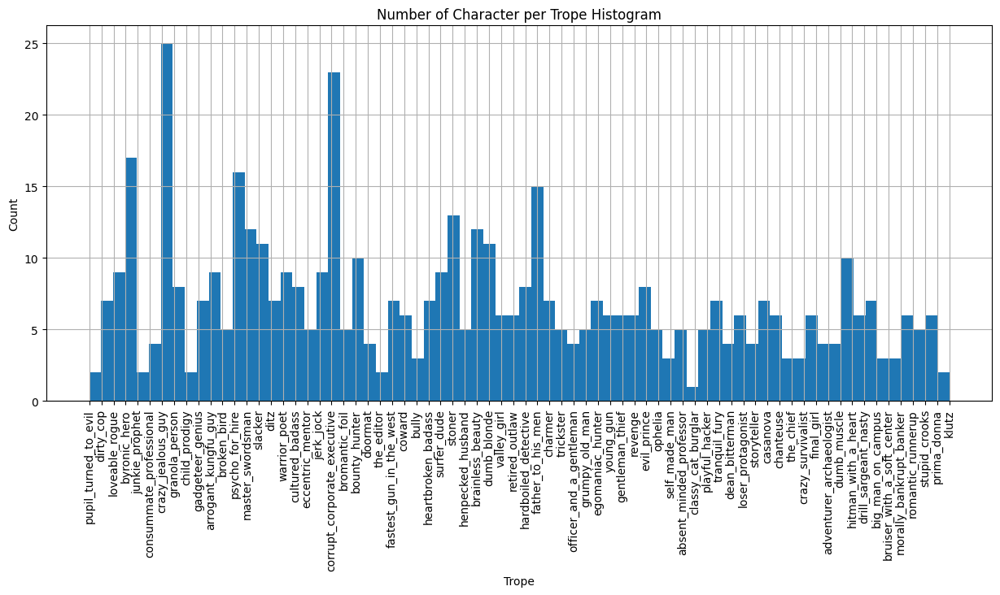
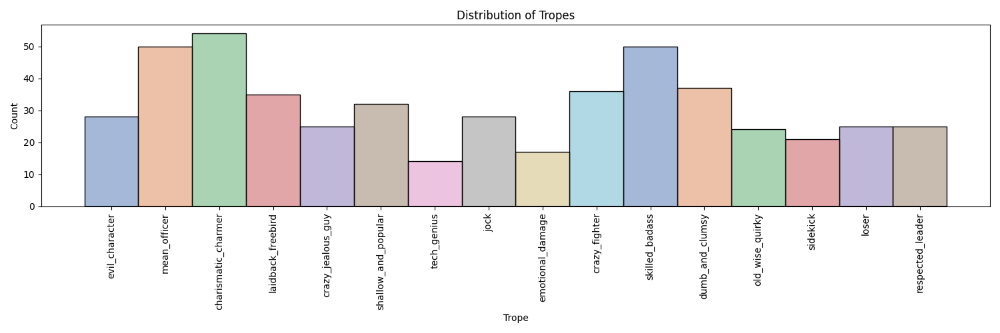

Before we have fun analyzing the data, we should probably get on the same page on the terms of our question of interest. What are the actor features do we want to analyse? What character tropes are we using for our categories?
Character Tropes
As mentionned in our About page we are using the dataset provided by the CMU Movie Summary Corpus, collected by David Bamman, Brendan O'Connor, and Noah Smith. This dataset provides us with lots of interesting data on more than 42 000 movies such as the actors and their roles in each movie, their box office numbers, the movie genres and more. Let's start by determining our character tropes from this data.
The CMU Corpus provides us with 72 character tropes, based of TVTropes.org, with 501 characters manually categorised in each. As such, we narrow our focus on these 501 characters. We can view the distribution of these characters per trope in the graph below. 
Our first reaction seeing this graph was "Wow, there are a lot of crazy jealous guys in movies!" followed by "Why does no one want to be a classy cat burglar?". Jokes aside, the graph shows how unbalanced the distribution of characters per trope in our initial dataset. Indeed, with only one or two characters per trope at times, it would be quite impossible to come to unbiased conclusions regarding these tropes. It would be quite easy for us to say that if you don't have the same features as the actor playing the classy cat burglar trope, your dreams of playing that trope are as good as dead. Luckily for you (and for us), we decided against this easy way out.
Using our movie knowledge and the descriptions provided by TVTropes.org, we regrouped similar tropes together, creating larger archetypes.
Some tropes were easy to group together, such as the klutz and the ditz.
We tried to come up with names that best encapsulated the different features of these combined tropes.
All in all, we utimately came up with 16 unique character archetypes. From now on, when we will refer to character tropes, we will refer to these 16 archetypes:
-
skilled_badass -
loser -
laidback_freebird -
jock -
charismatic_charmer -
respected_leader -
crazy_fighter -
dumb_and_clumsy -
shallow_and_popular -
old_wise_quirky -
sidekick -
emotional_damage -
evil_character -
mean_officer -
tech_genius
We can plot the number of characters per trope to observe their distribution as we did before. 
There is now at least a dozen characters per trope, giving us a much better sample size to base our analysis on.
Actor Features
Height, Age, Gender & Ethnicities
With our tropes defined and out of the way, we need to define our actor features.
The CMU Corpus gives us a few interesting actor characteristics that we will explore such as ActorHeight, ActorAge, ActorGender and ActorEthnicity.
As we explored ActorEthnicity, we slowly realised that this variable would be unusable for our data analysis.
Indeed, we observed more than 30% of missing data for this variable (anything over 10% increases the likelihood of biased results) and we could not find any suitable datasets online to complete these missing values.
The ethnicities defined in the CMU Corpus were extremely precise, such as Afro Trinidadians and Tobagonians or Ashkenazi Jews.
A lot of the ethnicities defined in the data seemed to fall also under the umbrella of nationality, with labels like Korean American.
At first, we tried to simplify these ethnicities, in an attempt to group them together as we did with the tropes earlier. But this raised a clear ethical question, who are we to say that an actor identifying as Korean American can be reduced to either just Korean or just American?
As such, with all of these issues, we decided to remove this variable from our analysis, simplifying our analysis, and saving us from the burden of ethical dilemnas!
Let us now explore ActorHeight, ActorAge and ActorGender.
These variables did not have nearly as many missing values as ActorEthnicity and as such, we were able to complete them manually.

From the plots, we observe that female actors are usually much younger than their male counterparts (and smaller but this is probably more a matter of biology than casting preference). Could this be our first clue for our analysis? The only way for you to find out is keep reading...
Facial Landmarks & Encodings
Having Height, Age and Gender is all well and good but we probably won't go very far with just these features to qualify an actor (it would be quite reductive to qualify Brad Pitt as an 1.8m tall, 59 year-old man).
No... we need something more... something more substantial to properly characterise each actor.
Have you ever had that moment when you looked at your friend and you said to yourself, "You would make a fantastic protagonist"? Or that moment after a movie screening when you just say "That character was perfectly cast". Think Draco Malfoy played by Tom Felton in Harry Potter, or Joffrey Baratheon played by Jack Gleeson in Games of Thrones. There is just something about them that perfectly match with their (hypothesised in the case of your friend) roles. It can't be their personalities because, well, you don't know the actors (unless you do, in that case could you ask Tom to sign my Philosopher's Stone book for me?). And with today's means, it is highly common for actors to change their body shape and haircut for the role they're casted in. However, there is one thing they can not drastically alter: their face.
As such, we decided to analyse the face of each actor in our dataset, characterising them as facial encodings and landmarks.
We extract facial images of the 347 actors playing the 501 characters (some actors play different roles) from The Movie Database (TMDB).
A new dataset named actor_images.csv is created, containing the actor's name and their corresponding image stored as URL with its width and height.
Using the face_recognition and OpenCV libraries, we extract the facial landmarks and encodings of each image.
The facial landmarks are a set of 68 coordinates (x and y), corresponding to the implacement of human face specific landmarks such as eyes, nose, eyebrows, lips and chin in the image.

On the other hand, face encodings are a set of 128 encodings, specific to a person. As explained in Ng et al.,2019 :
"In the face encoding and feature extraction step, deep learning is implemented in this step to determine which part of the face is important to be measured for the face recognition process. The deep convolutions neural network is being trained by loading a training face image of a known person, load another picture of the same known person, and load a picture of a totally different person, then the neural network tweak accordingly based to the result. After lots of repeating training, the neural network learns to reliably generate 128 measurements for each person."
Our main interest concerning these facial features is to compare actors between each other, to identify which actors, associated with their respective role and trope, would cluster together.
We will use the facial landmarks to compare the ratios between facial features.
In other word, we will not compare the size of actors' noses but rather we will compare the proportion of the different distinctive facial features relative to the actor's face.
For example, an actor may appear to have large eyes due to their small face while in absolute their eyes are averaged sized.
We identify various distinctive facial features, Eye Distance, Eye Positon, Nose Length, Nose Width, Eyebrow Length, Face Shape and Cheek Bones.
Let us look which of these facial features are independent by observing their distributions.

Three parameters jump out as variables of interest for us.
We observe that the Nose Length is normally distributed, whereas the Eye Distance and Nose Width are skewed towards the right and left, respectively.
In terms of correlation, Eye Distance and Nose Length are not correlated, Nose Width and Eye Distance weakly positively correlated, and Nose Width and Nose Length weakly negatively correlated.
This means that we can consider those three parameters, Eye Distance, Nose Length, Nose Length as independant of each other and use them for our analysis as such.
While facial landmarks are used to compared the proportions of actors' facial features, we will use Facial Encodings to compare actors between each other. Indeed, we calculate the Euclidean Distance between facial encodings to get a sense of how closely actors ressemble each other. The higher the calculated value, the further apart they are.
And so,to conclude we identified a set of features to define our actors.:
-
ActorGender -
ActorAge -
ActorHeight -
Facial Landmarks -
Facial Encodings
We can now combine this set of features with our 16 unique character tropes to start chipping away at the answer of our main question, "Which features define particular character tropes?", locked behind a set of doors. As we stand in front of these locked doors, having completed the first step of pre-processing, we say the magic words: Open Sesame. And to our surprise, unlike Ali Baba in front of the thieves' den, two paths open up to us:
Supervised Learning or Unsupervised Learning
Which should we choose? Why not both? But more importantly... which path will you choose to read next?